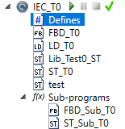

The compiler supports the definition of aliases. An alias is a unique identifier that can be used in programs to replace another text. Definitions are typically used for replacing a constant expression and ease the maintenance of programs.
There are two levels of definitions:
Global definitions can be edited from the “Defines” editor. The “Defines” item appears at the top of the programs tree view of every task.

Local definitions are edited together with the corresponding program.
Note: Library code uses the global defines of the task it is compiled with.
Definitions are entered in a text editor. Each definition must be entered on one line of text according to the following syntax:
#define Identifier Equivalence (* comments *)
Example
#define OFF FALSE (* redefinition of FALSE constant *)
#define PI 3.14 (* numerical constant *)
#define ALARM (bLevel > 100) (* complex expression *)
You can use a definition within the contents of another definition. The definition used in the other one must be declared first.
Example:
#define PI 3.14
#define TWOPI (PI * 2.0)
Note: A definition may be empty, for example: #define CONDITION
Defined word can be used for directing the conditional compiling directives.
You can enter #define lines directly in the source code of programs in IL or ST languages.
The use of definitions may disturb the program monitoring and make error reports more complex. It is recommended to restrict the use of definitions to simple expressions that have no risk to lead to a misunderstanding when reading or debugging a program.
The following words are predefined by the compiler and can be used in the programs:
|
Word |
Description |
|
__DATE__ |
Date stamp of compiling expressed as a string constant expression Format is: Year/Month/Day-Hours-Minutes. |
|
__MACHINE__ |
Name of the host machine performing compilation, expressed as a string constant expression. |
|
__USER__ |
Name of the user performing the compilation, expressed as a string constant expression. |
Example:
The following ST program sets variables declared as STRING(255):
strDate := __DATE__;
strMachine := __MACHINE__;
strUser := __USER__;
Result:
strDate is '2020/01/24-10:45'
strMachine is 'LaptopJX'
strUser is 'John'
The compiler supports conditional compiling directives in ST, LD, and FBD languages. Conditional compiling directives condition the inclusion of a part of the program in the generated code. Conditional compiling is an easy way to manage several various configurations and options in a unique application programming.
Conditional compiling uses definitions as conditions. Below is the main syntax:
#ifdef CONDITION
statementsYES...
#else
statementsNO...
#endif
If CONDITION has been defined using #define syntax, then the statementsYES part is included in the code, else the statementsNO part is included. The #else statement is optional.
In ST language, directives must be entered alone on one line of text. In FBD language, directives must be entered as the text of network brakes. In LD language, directives must be entered on comment lines.
The condition __DEBUG is automatically defined when the application is compiled in DEBUG mode. This allows you to incorporate some additional statements (such as trace outputs) in your code that are not included in RELEASE mode.
The compiler enables you to write your own exception programs for handling particular system events.
Please refer to Exception Handling document for more details.